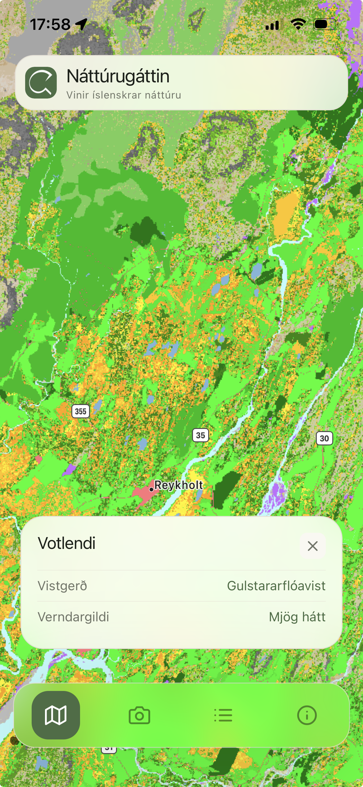
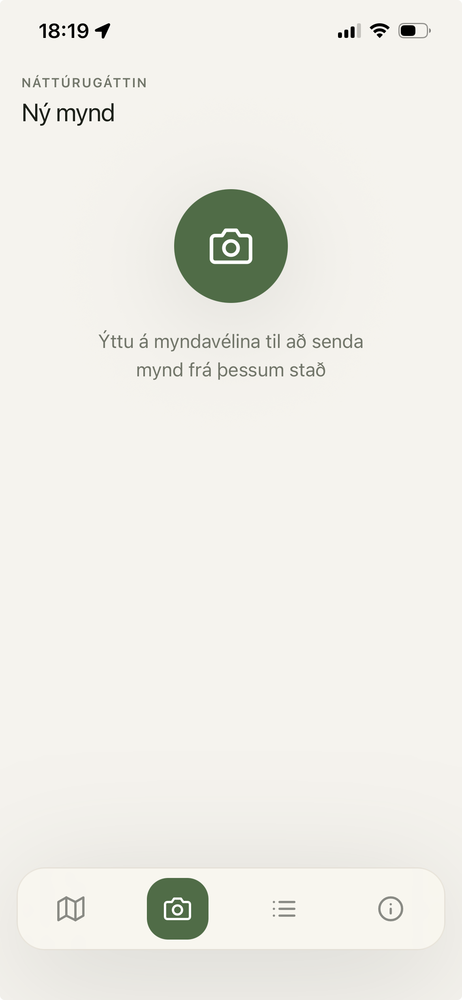
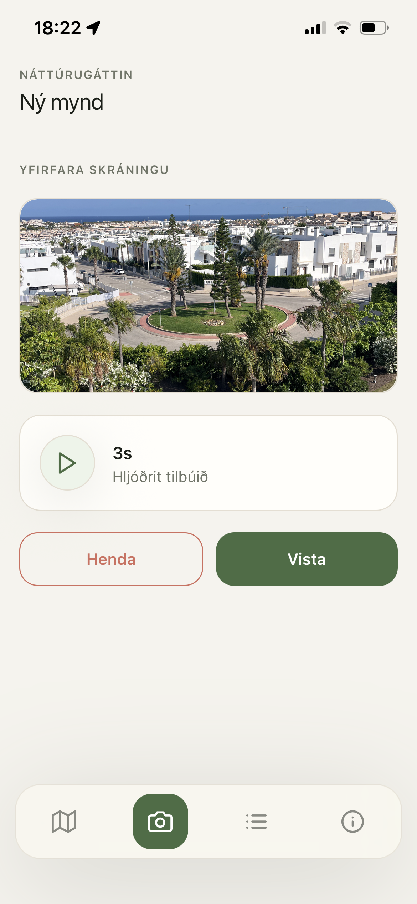
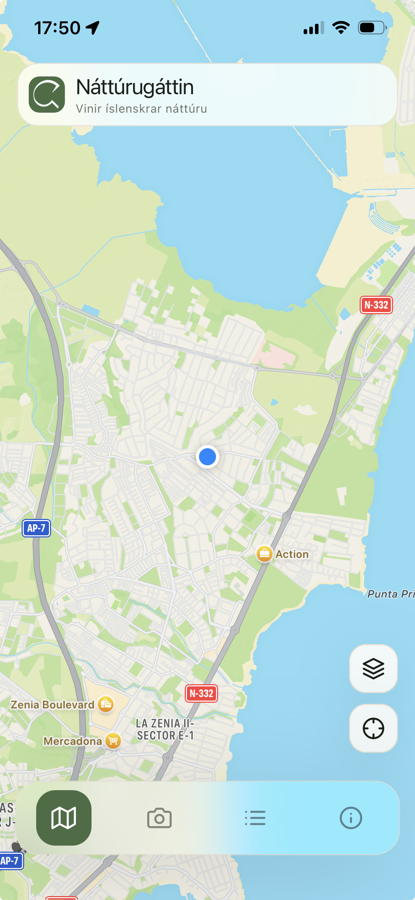
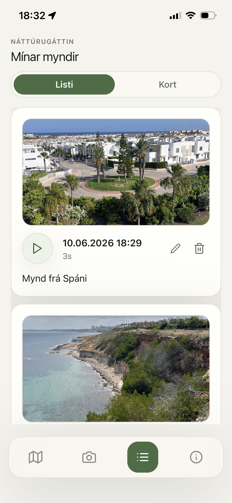
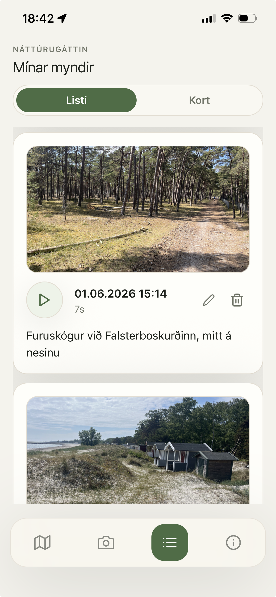
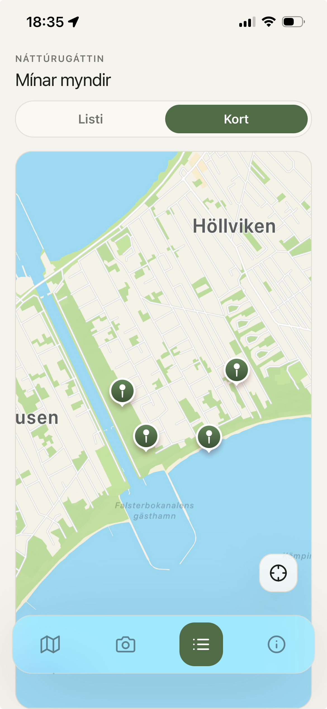
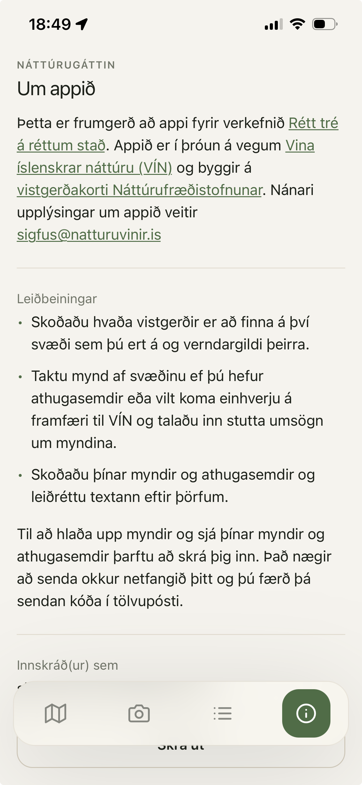

Kortið
Svona lítur kortaskjárinn út þegar appið er opnað. Fyrir utan valmyndina neðst á skjánum erum tveir takkar á kortinu. Annar þeirra zoomar inn á staðsetningu notandans og með hinum er hægt að velja aðrar kortaþekjur.









01 / 09 Kortið
Svona lítur kortaskjárinn út þegar appið er opnað. Fyrir utan valmyndina neðst á skjánum erum tveir takkar á kortinu. Annar þeirra zoomar inn á staðsetningu notandans og með hinum er hægt að velja aðrar kortaþekjur.
Svona lítur kortið þegar búið erað zooma þó nokkuð inn og smella á eina vistgerð. Ef ég hefði verið á staðnum þegar ég gerði þetta væri lítið blátt merki á staðnum sem sýnir hvar ér er (sjá skjáskot 5)
Skjámynd sem sýnir upphaf ferlilsins til að taka myndir og hljóðrita skráningu/athugasemd.
Skjámynd sem sýnir lok ferlisins til að taka myndir og hljóðrita skráningu/athugasemd
Kort sem sýnir núverandi staðsetningu mína eftir að hafa smellt á "Locate me" takkann.
Allar myndir notendans á lista. Hægt er að hlusta á upptökuna. AI sér um að breyta Hjóðritun í textta, sem hægt er að uppfæra eða eyða allri færslunni.)
Það er bara að smella á merkin til að sjá hverja mynd fyrir sig
Hér er enn sem komið er bara texti fyrir þau sem testa frumgerðina